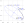

EllipseArc¶
Overview¶
Concrete Class
- ‘
A segment of an ellipse.
{kind=link}
Supertypes
Members¶
Data Properties¶
Name |
Multiplicity |
Type |
Ordered |
Unique |
|
|---|---|---|---|---|---|
1 |
no |
no |
The center position of the EllipseArc. |
||
1 |
no |
no |
The end angle of the EllipseArc, measured clockwise and in degrees. The value must be in the inverval [0; 360). |
||
1 |
no |
no |
The length of the horizontal semi-axis of the EllipseArc in mm. |
||
1 |
no |
no |
The rotation of the EllipseArc around its center, measured clockwise and in degrees. The value must be in the inverval [0; 360). |
||
1 |
no |
no |
The start angle of the EllipseArc, measured clockwise and in degrees. The value must be in the inverval [0; 360). |
||
1 |
no |
no |
The stroke of the EllipseArc. |
||
1 |
no |
no |
The length of the vertical semi-axis of the EllipseArc in mm. |
Geometry¶
An EllipseArc is a segment of an ellipse. The geometry of the underlying ellipse is described in the same way as the geometry of the actual Ellipse class (Center, HorizontalSemiAxis, VerticalSemiAxis, Rotation). In addition, an EllipseArc has two attributes StartAngle and EndAngle that determine the start and end position of the arc.
Example
We consider an EllipseArc with
Center
(10, 20),HorizontalSemiAxis
110,VerticalSemiAxis
50, andRotation
35.
These attributes describe the blue dashed ellipse in this figure (cf. the Ellipse example which has the same attribute values).
The EllipseArc has two further geometric attributes
StartAngle
288andEndAngle
20.
These two angles do not have a simple geometric interpretation in the figure; we will get back to them in the following sections. However, these angles determine the start position and the end position of the black EllipseArc in the figure. The actual EllipseArc goes from the start position in positive direction (i.e., clockwise) to the end position.
Calculation of start and end position
We use the following notation:
\(c_x\) and \(c_y\): components of the Center,
\(r_x\): HorizontalSemiAxis,
\(r_y\): VerticalSemiAxis,
\(\varphi\): Rotation,
\(\theta_1\): StartAngle,
\(\theta_2\): EndAngle,
\(x_1\) and \(y_1\): start position,
\(x_2\) and \(y_2\): end position.
Technical
The notation is based on that used by the SVG Arc Implementation Notes which may be useful for implementors.
The start position is
and the end position is
Example
In the example, we have
With the equations above, we get these coordinates for the start and end positions (cf. the figure above):
Interpretation of StartAngle and EndAngle
These angles are not measured in the ellipse on which an EllipseArc is based, but in the unit circle:
???
The figure shows the end position w.r.t. the unit circle. Its angle measured from the horizonal semi-axis is \(\theta_2 = 20\). The ellipse could be constructed by stretching the unit circle by \(r_x\) in direction of the horizontal semi-axis and by \(r_y\) in direction of the vertical semi-axis. After this transformation, the end position w.r.t. the unit circle is at the actual end position.
To calculate an actual, ellipse-based angle from an angle w.r.t. the unit circle, use the formula
The formulas apply to both the StartAngle \(\theta_1\) and the EndAngle \(\theta_2\). Note that we give angles in degrees, i.e., the actual calculations in a program may require conversions to and from radians.
Example
In the example, we have
and
The inverse formula is
Technical
The rationale for using angles w.r.t. the unit circle is that they are numerically more stable when an EllipseArc is scaled with small values (i.e., in a ShapeUsage) and that some calculations are simpler (cf. SVG 2 Arc Implementation Notes).
Mapping to SVG¶
An EllipseArc is mapped to an svg:path with these attributes:
dis the path data that describes the entire geometry of the EllipseArc. The value is the concatenation of the following strings, all of them separated by spaces:Mstr(\(x_1\))
str(\(y_1\))
Astr(\(r_x\))
str(\(r_y\))
str(\(\varphi\))
str(\(f_A\))
1str(\(x_2\))
str(\(y_2\))
\(f_A\) is calculated as follows (cf. the definition of the modulo operator):
\[ \begin{align}\begin{aligned}\Delta \theta &= (\theta_2 - \theta_1)\, \textrm{mod}\, 360 \quad ,\\f_A &= 0 \quad \textrm{if} \, \Delta \theta < 180 \quad ,\\f_A &= 1 \quad \textrm{if} \, \Delta \theta \geq 180 \quad .\end{aligned}\end{align} \]The other variables have been defined above.
stroke,stroke-dasharray,stroke-dashoffsetandstroke-widthare set according to the SVG mapping rules for the Stroke of the EllipseArc (see Stroke).stroke-linecap = "round"andstroke-linejoin = "round"reflect the heuristic for line caps and line joins.vector-effect = "non-scaling-stroke"reflects the heuristic for scaled symbols.fill = "none"is required to avoid that the svg:path is filled.
Example
We assume that the Stroke of the EllipseArc above is
2mm #ff0000 solid.
With \(\Delta \theta = (20 - 288)\, \textrm{{mod}}\,360 = (-268)\, \textrm{{mod}}\, 360 = 92 < 180\) we get \(f_A = 0\).
{EllipseArcSolidSvgCode}
???
Example
We consider the same EllipseArc as in the previous example,
except that the Stroke is
2mm #ff0000 Dash.
{EllipseArcDashSvgCode}
Center¶
Data Property
The center position of the EllipseArc.
Type: Point
Multiplicity: 1
Ordered: no
Unique: no
Example¶
X = 2.0,
Y = 5.0)
EndAngle¶
Data Property
The end angle of the EllipseArc, measured clockwise and in degrees. The value must be in the inverval [0; 360).
Type: Double
Multiplicity: 1
Ordered: no
Unique: no
Example¶
270.0
HorizontalSemiAxis¶
Data Property
The length of the horizontal semi-axis of the EllipseArc in mm.
Type: Double
Multiplicity: 1
Ordered: no
Unique: no
Example¶
7.5
Rotation¶
Data Property
The rotation of the EllipseArc around its center, measured clockwise and in degrees. The value must be in the inverval [0; 360).
Type: Double
Multiplicity: 1
Ordered: no
Unique: no
Example¶
270.0
StartAngle¶
Data Property
The start angle of the EllipseArc, measured clockwise and in degrees. The value must be in the inverval [0; 360).
Type: Double
Multiplicity: 1
Ordered: no
Unique: no
Example¶
90.0
Stroke¶
Data Property
The stroke of the EllipseArc.
Type: Stroke
Multiplicity: 1
Ordered: no
Unique: no
Example¶
B = 0,
G = 0,
R = 128),
Width = 0.3)
VerticalSemiAxis¶
Data Property
The length of the vertical semi-axis of the EllipseArc in mm.
Type: Double
Multiplicity: 1
Ordered: no
Unique: no
Example¶
3.5
Example in DEXPI XML¶
<Object type="Core/Diagram.EllipseArc">
<Data property="Center">
<AggregatedDataValue type="Core/Diagram.Point">
<Data property="X">
<Double>2.0</Double>
</Data>
<Data property="Y">
<Double>5.0</Double>
</Data>
</AggregatedDataValue>
</Data>
<Data property="EndAngle">
<Double>270.0</Double>
</Data>
<Data property="HorizontalSemiAxis">
<Double>7.5</Double>
</Data>
<Data property="Rotation">
<Double>270.0</Double>
</Data>
<Data property="StartAngle">
<Double>90.0</Double>
</Data>
<Data property="Stroke">
<AggregatedDataValue type="Core/Diagram.Stroke">
<Data property="Color">
<AggregatedDataValue type="Core/Diagram.Color">
<Data property="B">
<Integer>0</Integer>
</Data>
<Data property="G">
<Integer>0</Integer>
</Data>
<Data property="R">
<Integer>128</Integer>
</Data>
</AggregatedDataValue>
</Data>
<Data property="DashStyle">
<DataReference data="Core/Diagram.DashStyle.Solid"/>
</Data>
<Data property="Width">
<Double>0.3</Double>
</Data>
</AggregatedDataValue>
</Data>
<Data property="VerticalSemiAxis">
<Double>3.5</Double>
</Data>
</Object>